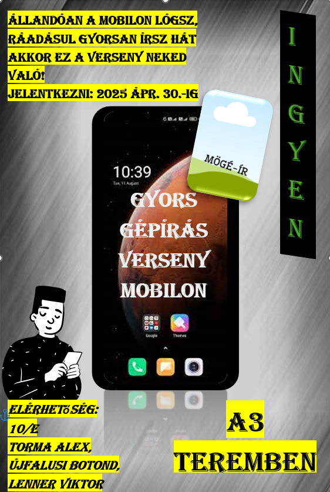

Mögé-ír

Ismertető
A Verseny a jelenkezők számottól függetlenül (10 ember/kör) gyorsgépírás SAJÁT telefon használatával kivivni hogy,
Ki a gyorsírok királya?
Hogyan lehet jelenkezni?
- Elöször is ki kell tölteni a (MÉG) el nem készített jelentkezási lapot ---->
- Aztán igényelni kell egy "telefon engedélyi lapot" a titkárságon
- Ezután ha sikerült az A3 teremben jelentkezel és a telefondnak
"Márka és neve el lesz kérve és Teljes név"
- És ezek után kivárni az Ápr.30-ót
Ahogy a szórólapon látható Ápr. 30-ig lehet jelentkezni, az A3-mas teremben!!!
Szabály
- Bármilyen telefont elfogadunk de a megadott alkalmazást használhatják
- Szigorúan tilos!!!! Bármilyen írás segitőtt használni pl:[Autocorrect]
- Lehetőleg stabil netet biztosítsd magadnak (De nem kötelező)
SOK SIKERT MINDEN EGYES ÍRÓNAK!!!